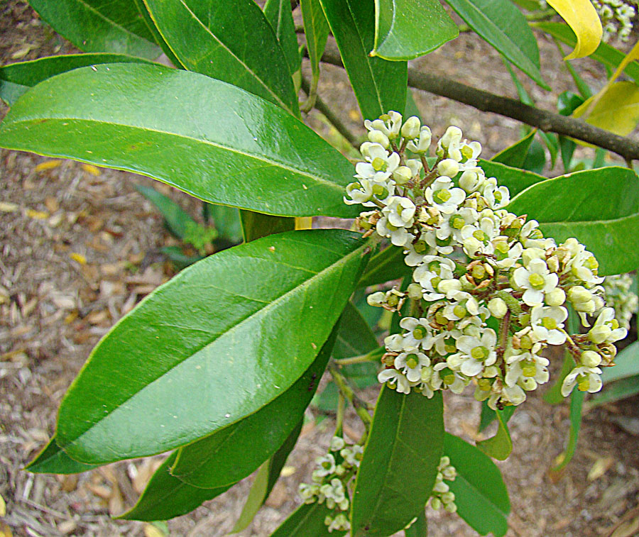
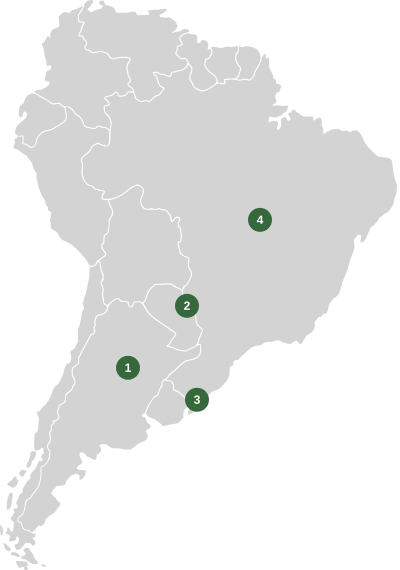
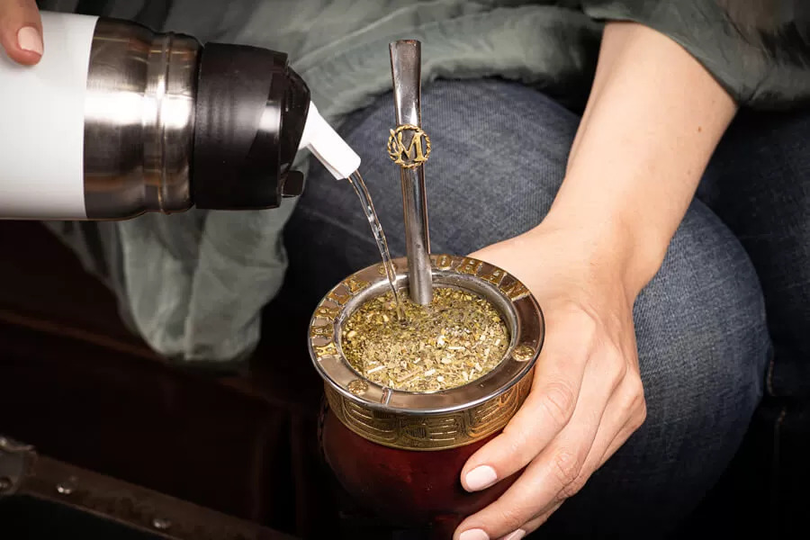
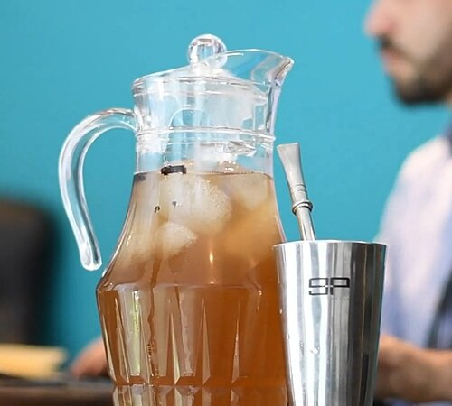
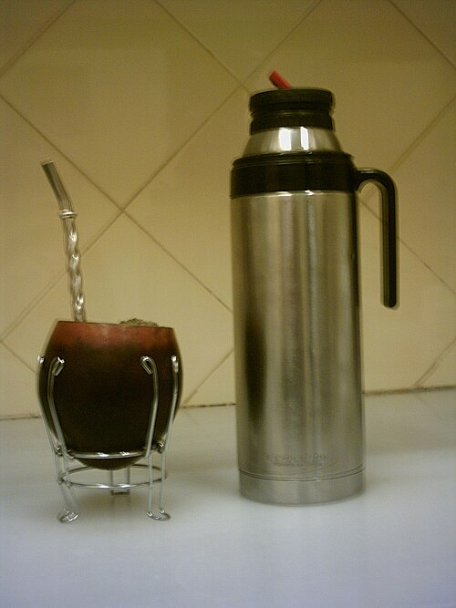
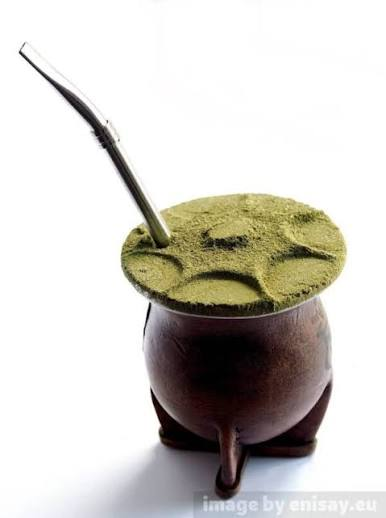

¿De dónde viene? El origen del mate
Todo empieza en la planta de yerba mate
La yerba mate se obtiene de las hojas y ramitas de Ilex paraguariensis, un árbol nativo de Sudamérica. Crece naturalmente en la región de la selva paranaense, que abarca zonas de Argentina, Paraguay y Brasil. Sus hojas se cosechan, se secan y se muelen para preparar la yerba que usamos en la infusión.
Antes de convertirse en una costumbre compartida, el mate fue una manera de aprovechar esa planta del monte. Con el tiempo cambiaron los recipientes y las formas de preparación, pero la yerba siguió siendo el ingrediente esencial.

Pueblos guaraníes
Los pueblos guaraníes conocían la planta de yerba mate mucho antes de que la bebida se difundiera por Sudamérica. Recolectaban sus hojas y las incorporaban a sus prácticas cotidianas. Su conocimiento del monte y de esta especie es una parte fundamental de la historia del mate.
Expansión por la región
Durante la época colonial, la yerba mate empezó a circular por rutas comerciales y llegó a comunidades cada vez más alejadas de su zona de origen. Así, la infusión se volvió conocida en distintos territorios, donde cada lugar desarrolló sus propias maneras de prepararla y compartirla.
Tradición actual
Hoy el mate está presente en casas, escuelas, trabajos y viajes. Algunas personas lo toman solas y otras lo comparten en ronda. Más allá de la forma del recipiente, preparar y ofrecer un mate sigue siendo una manera sencilla de acompañar una conversación.
El mate alrededor de Sudamérica
La misma planta está presente en costumbres que cambian de un lugar a otro. Elegí un punto del mapa para ir a la información de ese país. También podés usar la lista de enlaces que aparece debajo.

- Argentina
- Paraguay
- Uruguay
- Brasil
Argentina
El mate suele acompañar momentos de estudio, trabajo o descanso. También es común compartirlo en una ronda, donde una persona prepara la infusión y pasa el recipiente a las demás.

Paraguay
Además del mate caliente, es muy conocido el tereré: una preparación con agua fría que resulta especialmente popular en los días de calor y que también se comparte entre amigos o familiares.

Uruguay
Es habitual ver personas que llevan su mate y su termo durante el día. Esa costumbre permite preparar la bebida en distintos lugares, desde una plaza hasta el camino al trabajo.

Brasil
En el sur del país se toma chimarrão, una forma local de preparar yerba mate. Suele servirse en una cuia y conserva una molienda y una presentación propias de esa tradición.

Si querés seguir investigando, leé más sobre la historia del mate.